청소년상담사-2급(2교시) (2020-10-10 기출문제)
1과목: 진로상담
1. 청소년 진로상담의 목표로 옳지 않은 것은?
- 학업능력 향상
- 직업세계에 대한 이해 증진
- 합리적인 의사결정능력 향상
- 자신에 대한 이해 증진
- 직업기초능력 향상
(정답률: 알수없음)

2. 진로상담이론에 관한 설명으로 옳지 않은 것은?
- 윌리암슨(E. Williamson)의 특성요인이론은 분석, 종합, 진단, 예측, 상담, 추수지도 등으로 진로상담과정을 설명한다.
- 하렌(V. Harren)의 진로의사결정과정은 인식, 참여, 확신, 이행 등의 의사결정 단계를 설명한다.
- 긴즈버그(E. Ginzberg)의 진로발달이론은 환상기, 잠정기, 현실기 등으로 진로발달단계를 설명한다.
- 로우(A. Roe)의 욕구이론은 부모 양육태도가 자녀의 직업선택에 영향을 미친다고 가정한다.
- 블라우(P. Blau)의 사회학적 이론은 가정, 학교, 지역사회 등 사회적 요인이 직업선택과 발달에 영향을 미친다고 가정한다.
(정답률: 알수없음)
3. 다음 ( )에 들어갈 내용을 순서대로 바르게 연결한 것은?
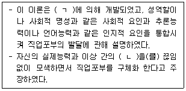
- ㄱ: 겔라트(H. Gelatt), ㄴ: 순환적 의사결정
- ㄱ: 투크만(B. Tuckman), ㄴ: 상호관계
- ㄱ: 카츠(E. Katz), ㄴ: 가치결정
- ㄱ: 수퍼(D. Super), ㄴ: 진로적응
- ㄱ: 갓프레드슨(L. Gottfredson), ㄴ: 절충
(정답률: 알수없음)
4. 타이드만(D. Tiedeman)과 오하라(R. O'Hara)의 진로의사결정이론에 관한 설명으로 옳지 않은 것은?
- 인지적 구조의 분화와 통합에 의해 의식적 문제해결 과정을 예상기와 이행기로 나누어 설명한다.
- 구체화 단계에서는 가능한 대안을 선택하며, 각 대안의 장단점을 검토하여 서열화 및 조직화한다.
- 선택 단계에서는 수동적인 수용의 성격에서 좀 더 적극적인 태도로 변화한다.
- 명료화 단계에서는 선택 실행을 위한 계획은 할 수 있지만, 적극적 실행조건은 부족하다.
- 적응 단계에서는 선택에 수동적으로 적응하며, 개인의 목표와 포부는 집단의 목표에 동화되고 수정된다.
(정답률: 알수없음)
5. 다위스(R. Dawis)와 롭퀴스트(L. Lofquist)의 직업적응이론에 관한 설명으로 옳은 것을 모두 고른 것은?
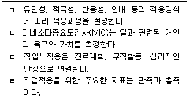
- ㄱ, ㄴ
- ㄷ, ㄹ
- ㄱ, ㄴ, ㄹ
- ㄴ, ㄷ, ㄹ
- ㄱ, ㄴ, ㄷ, ㄹ
(정답률: 알수없음)
6. 수퍼(D. Super)의 생애진로발달이론에 관한 설명으로 옳지 않은 것은?
- 개인은 특정 시기에 사회적 관계 속에서 발생하는 다양한 생애역할을 수행한다.
- 진로성숙 과정을 체계적으로 기술하고 있지만 자아개념을 지나치게 강조하고 있다는 비판을 받고 있다.
- 하비거스트(R. Havighurst)의 발달과업 개념을 차용하여 진로의 의미를 한 개인의 생애과정으로 설명한다.
- 진로아치모형은 자녀, 학생, 직업인, 시민 등의 역할을 설명하고 있다.
- 진로성숙도는 각 단계의 발달과업을 성공적으로 수행할 수 있는 준비도를 의미한다.
(정답률: 28%)
7. 다음은 사회인지진로이론에 관한 설명이다. ( )에 들어갈 용어를 순서대로 나열한 것은?
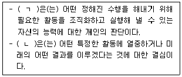
- ㄱ: 유연성, ㄴ: 몰입
- ㄱ: 적성, ㄴ: 조직화
- ㄱ: 진로성숙, ㄴ: 결과기대
- ㄱ: 자기효능감, ㄴ: 목표
- ㄱ: 진로적응도, ㄴ: 진로장벽
(정답률: 34%)
8. 사비카스(M. Savickas)가 제안한 진로적응도 차원과 개입 질문의 연결로 옳은 것을 모두 고른 것은?
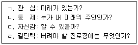
- ㄱ, ㄴ
- ㄷ, ㄹ
- ㄱ, ㄴ, ㄷ
- ㄴ, ㄷ, ㄹ
- ㄱ, ㄴ, ㄷ, ㄹ
(정답률: 알수없음)
9. 수퍼(D. Super)의 진로발달단계에서 다음과 같은 발달과업이 수행되는 단계는?
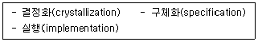
- 성장기
- 탐색기
- 확립기
- 유지기
- 쇠퇴기
(정답률: 알수없음)
10. 다음은 홀랜드(J. Holland)의 직업성격유형이론에 관한 설명이다. ( )에 들어갈 용어를 순서대로 바르게 나열한 것은?
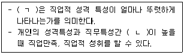
- ㄱ: 변별성, ㄴ: 일치성
- ㄱ: 일관성, ㄴ: 변별성
- ㄱ: 변별성, ㄴ: 일관성
- ㄱ: 일관성, ㄴ: 일치성
- ㄱ: 일치성, ㄴ: 일관성
(정답률: 30%)
11. 다음 사례의 내담자는 윌리암슨(E. Williamson)의 관점에서 어떤 진로의사결정 문제를 갖고 있는가?
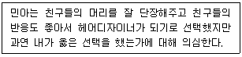
- 진로무선택
- 불확실한 선택
- 현명하지 못한 선택
- 흥미와 적성 간의 모순
- 직업부조화
(정답률: 25%)
12. 로우(A. Roe)의 욕구이론에 관한 설명으로 옳지 않은 것은?
- 매슬로우(A. Maslow)의 욕구위계이론을 근거로 직업과 기본욕구 만족간의 관련성을 설명하였다.
- 8개 직업군을 6개의 직무수준으로 구분하여 직업분류를 하였다.
- 실증적인 근거가 결여되어 있다는 비판을 받고 있다.
- 인간지향적 성격을 가진 개인은 서비스직, 비즈니스직, 문화직 등의 직업을 선택하려 한다.
- 진로상담을 위한 구체적인 절차를 제공하고 있다.
(정답률: 25%)
13. 진로상담의 최근 동향에 관한 설명으로 옳지 않은 것은?
- 사회학습진로이론은 진로개발과정에서 우연의 중요성을 강조한다.
- 사회인지진로이론은 진로의사결정과정에서 맥락을 중요시하는 관점을 수용하고 있다.
- 구성주의진로이론은 긴즈버그(E. Ginzberg)의 아이디어를 현대적 시각으로 통합하고 있다.
- 인지정보처리이론은 의사소통, 분석, 종합, 평가, 실행의 5단계로 진로의사결정을 설명한다.
- 구성주의진로이론에서는 내담자의 진로이야기를 이끌어내는 방법으로 진로유형면접을 활용한다.
(정답률: 알수없음)
14. 다음에 제시된 정부지원 사업은?
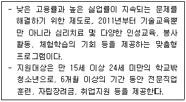
- 학교밖청소년지원센터
- 취업사관학교
- 취업성공패키지
- 근로자 내일배움카드제
- 드림스타트
(정답률: 알수없음)
15. 진로상담에서 활용 가능한 검사 중 다음에 해당하는 것은?
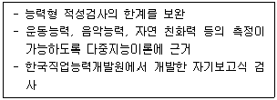
- 적성진단검사
- 직업선호도검사
- GATB 직업적성검사
- 영업직무 기본역량검사
- 직업적성검사
(정답률: 알수없음)
16. 진로상담에서 사용하는 검사의 구성요소로 옳지 않은 것은?
- 자기효능감척도(SES)는 일반적 자기효능감, 사회적 자기효능감 등으로 구성되어 있다.
- 진로발달검사(CDI)는 진로계획, 진로탐색, 의사결정, 일의 세계에 대한 지식, 선호하는 직업에 대한 지식 등으로 구성되어 있다.
- 진로결정척도(CDS)는 확신척도와 미결정척도로 구성되어 있다.
- 진로성숙도검사(CMI)는 진로성숙태도, 진로성숙능력, 진로성숙행동 등으로 구성되어 있다.
- 진로전환검사(CTI)는 수행불안, 외적갈등, 의사결정 혼란 등으로 구성되어 있다.
(정답률: 알수없음)
17. 다음 사례에 제시된 내담자는 어떤 진로문제를 가지고 있는가?
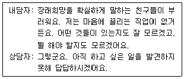
- 진로미결정
- 우유부단함
- 진로불결정
- 진로신화
- 진로결정
(정답률: 20%)
18. 진로심리검사 해석 시 유의사항으로 옳지 않은 것은?
- 내담자가 추구하는 목적을 고려한다.
- 검사결과는 통합적인 관점에서 해석한다.
- 검사에 대한 내담자의 반응을 점검한다.
- 내담자가 이해하기 쉬운 언어로 해석한다.
- 전문가의 권위로만 내담자를 진단하고 해석한다.
(정답률: 50%)
19. 진로 미결정자를 위한 상담목표로 옳은 것을 모두 고른 것은?
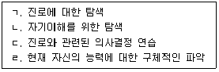
- ㄱ, ㄴ
- ㄴ, ㄷ
- ㄷ, ㄹ
- ㄱ, ㄷ, ㄹ
- ㄱ, ㄴ, ㄷ, ㄹ
(정답률: 28%)
20. 정부 및 공공기관에서 제공하는 진로정보의 연결로 옳지 않은 것은?
- 고용노동부: 구인구직통계, 고용노동통계연감
- 한국고용정보원: 한국직업사전, 워크넷
- 한국노동연구원: 고용동향분석, 노동시장전망
- 한국직업능력개발원: 직업정보, 구인ㆍ구직 실시간 정보매칭
- 통계청: 한국표준산업분류, 한국표준직업분류
(정답률: 19%)
21. 사이버 진로상담의 특징에 해당하는 것을 모두 고른 것은?
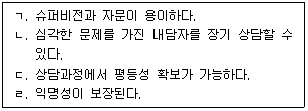
- ㄱ, ㄴ
- ㄷ,ㄹ
- ㄱ, ㄷ, ㄹ
- ㄴ, ㄷ, ㄹ
- ㄱ, ㄴ, ㄷ, ㄹ
(정답률: 20%)
22. 생애진로사정(Life Career Assessment)에 관한 설명으로 옳은 것을 모두 고른 것은?
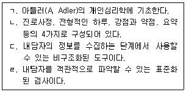
- ㄱ, ㄴ
- ㄴ, ㄷ
- ㄷ, ㄹ
- ㄱ, ㄷ, ㄹ
- ㄱ, ㄴ, ㄷ, ㄹ
(정답률: 알수없음)
23. 다음과 같은 진로문제를 모두 경험하는 내담자는?
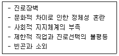
- 실업자
- 장애인
- 여성
- 다문화인
- 노인
(정답률: 37%)
24. 홀랜드(J. Holland)의 6가지 성격유형과 직업의 연결로 옳지 않은 것은?
- 현실적 유형(R): 운동선수, 항공기조종사, 공인회계사
- 탐구적 유형(I): 물리학자, 인류학자, 의료기술자
- 사회적 유형(S): 종교지도자, 언어치료사, 상담자
- 기업적 유형(E): 판사, 정치가, 영업사원
- 관습적 유형(C): 은행원, 법무사, 사서
(정답률: 40%)
25. 피터슨(G. Peterson), 샘슨(J. Sampson), 리어든(R. Reardon)의 인지정보처리이론의 기본 가정에 관한 설명으로 옳은 것을 모두 고른 것은?
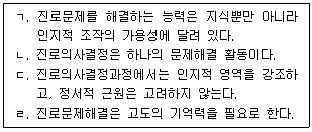
- ㄱ, ㄴ
- ㄴ, ㄷ
- ㄷ, ㄹ
- ㄱ, ㄴ, ㄹ
- ㄱ, ㄷ, ㄹ
(정답률: 알수없음)
2과목: 집단상담
26. 집단의 유형 중 상담집단에 관한 설명으로 옳지 않은 것은?
- 특정 과업을 완수하기 위한 목적으로 구성한다.
- 예방적ㆍ교육적ㆍ문제해결적ㆍ적응적 목적을 지닌다.
- 비교적 짧은 기간에 해결 가능한 문제를 주로 다룬다.
- 심각한 정신병리 치료보다 일상생활의 어려움 해결에 관심을 둔다.
- 과거의 문제보다 현재의 생활, 느낌, 사고 등에 초점을 맞춘다.
(정답률: 알수없음)
27. 집단상담의 구조 및 형태에 관한 설명으로 옳은 것을 모두 고른 것은?
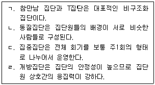
- ㄱ, ㄴ
- ㄱ, ㄴ, ㄷ
- ㄱ, ㄷ, ㄹ
- ㄴ, ㄷ, ㄹ
- ㄱ, ㄴ, ㄷ, ㄹ
(정답률: 50%)
28. 집단상담의 목표 설정에 관한 설명으로 옳지 않은 것은?
- 집단 초기에 집단과 집단원의 목표를 확인한다.
- 목표는 집단과정 전체에 걸쳐 수정되고 추가될 수 있다.
- 집단원 개인의 목표보다 집단 전체의 목표가 더 중요하다.
- 목표는 집단원과 집단상담자가 협력하여 설정한다.
- 집단의 과정적 목표에는 자기개방하기, 경청하기, 피드백 주고받기 등이 있다.
(정답률: 80%)
29. 집단상담의 치료적 요인에 관한 설명으로 옳지 않은 것은?
- 직면 - 자신의 불일치를 자각하여 변화의 계기를 만듦
- 이타심 - 다른 사람들의 긍정적, 생산적 행동을 배움
- 가족재연 - 가족을 연상시키는 집단역동을 통해 가족 관련 문제에 대해 작업함
- 정보공유 - 건강한 삶에 관한 정보를 습득함
- 응집력 - 다른 사람들과 서로 연결되어 있다고 느낌
(정답률: 42%)
30. 다음과 같은 청소년 집단상담자의 개입으로 옳은 것은?
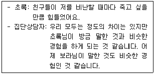
- 희망의 고취
- 자기개방
- 보편화
- 유머
- 정화
(정답률: 62%)
31. 집단원들이 다음과 같은 태도를 공통으로 보이는 집단 발달단계에서 집단상담자의 개입으로 옳지 않은 것은?
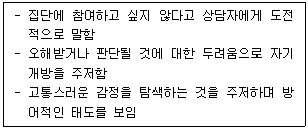
- 집단원들에게 자기개방의 중요성을 자각하게 한다.
- 신뢰감 촉진을 위해 의도적 활동을 도입한다.
- 집단원들의 저항을 치료적 과정의 자연스러운 부분으로 인정한다.
- 집단원들에게 두려움과 불안을 피하는 방법을 교육한다.
- 상담자 자신의 역전이 반응을 관찰한다.
(정답률: 34%)
32. 집단상담 종결단계에서의 고려사항으로 옳지 않은 것은?
- 집단경험 검토 및 요약하기
- 추후회기 개최 검토하기
- 학습한 것을 실생활에 적용하기
- 파티로 집단 마무리하기
- 집단상담에 대한 기대 파악하기
(정답률: 80%)
33. 개인심리 집단상담에서 사용하는 기법을 모두 고른 것은?
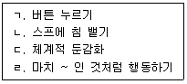
- ㄱ, ㄴ, ㄷ
- ㄱ, ㄴ, ㄹ
- ㄱ, ㄷ, ㄹ
- ㄴ, ㄷ, ㄹ
- ㄱ, ㄴ, ㄷ, ㄹ
(정답률: 37%)
34. 다음 설명에 해당하는 집단상담자의 이론적 접근은?
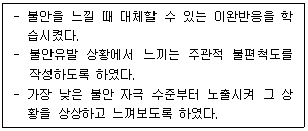
- 교류분석 집단상담
- 행동주의 집단상담
- 인간중심 집단상담
- 게슈탈트 집단상담
- 현실치료 집단상담
(정답률: 64%)
35. 게슈탈트 집단상담자의 개입방법으로 옳은 것을 모두 고른 것은?
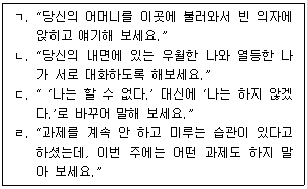
- ㄱ
- ㄴ, ㄷ
- ㄱ, ㄴ, ㄷ
- ㄱ, ㄴ, ㄹ
- ㄱ, ㄴ, ㄷ, ㄹ
(정답률: 30%)
36. 현실치료에서 말하는 효과적인 집단상담자에 관한 설명으로 옳은 것을 모두 고른 것은?
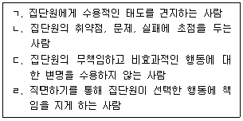
- ㄱ, ㄷ
- ㄱ, ㄹ
- ㄴ, ㄹ
- ㄱ, ㄷ, ㄹ
- ㄱ, ㄴ, ㄷ, ㄹ
(정답률: 알수없음)
37. 다음과 같은 기법을 사용한 집단상담 이론에 관한 설명으로 옳은 것은?
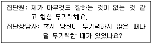
- 집단원이 보이는 문제의 원인을 밝히는 것이 중요하다.
- 집단원이 과거의 한 장면을 지금-여기에 가져와 재연하게 함으로써 미해결문제를 다루도록 돕는다.
- 집단상담자가 평가, 진단, 처치의 전문가로서 집단을 운영한다.
- 집단상담자가 면밀히 고안한 사회적 기술을 집단원에게 훈련시킨다.
- 집단원의 집단상담 참여 이전 변화경험을 중시한다.
(정답률: 알수없음)
38. 교류분석 집단상담에 관한 설명으로 옳은 것을 모두 고른 것은?
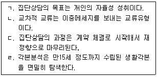
- ㄱ
- ㄱ, ㄴ
- ㄴ, ㄷ
- ㄴ, ㄷ, ㄹ
- ㄱ, ㄴ, ㄷ, ㄹ
(정답률: 알수없음)
39. 집단상담 이론과 설명의 연결로 옳은 것은?
- 게슈탈트 집단상담 - 집단원은 집단장면에서 현실과 유사한 행동연습을 한다.
- 인간중심 집단상담 - 집단상담자와 집단원은 계약을 통해 동등한 관계를 강조한다.
- 행동주의 집단상담 - 집단원의 신체적 단서를 지적해줌으로써 개인의 각성을 촉진한다.
- 정신분석 집단상담 - 다면적 전이 현상 경험으로 보다 폭넓은 전이관계가 관찰될 수 있다.
- 교류분석 집단상담 - 집단상담자의 직접적인 개입이 없어도 집단이 발전해 갈 것을 믿는다.
(정답률: 알수없음)
40. 집단상담에서 비밀보장 원칙의 예외상황으로 옳지 않은 것은?
- 집단원이 자신을 해칠 의도나 계획을 갖고 있는 경우
- 집단원이 타인을 해칠 의도나 계획을 갖고 있는 경우
- 집단원의 직장에서 집단원에 관한 정보를 요청한 경우
- 법원에서 판결을 위해 집단원에 관한 정보를 요청한 경우
- 집단원이 코로나19 확진자임을 알게 된 경우
(정답률: 55%)
41. 다음과 같은 집단상담자의 기술은?
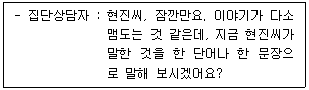
- 직면
- 연결
- 차단
- 반영
- 요약
(정답률: 알수없음)
42. 집단상담에서 집단원인 '보라'가 보이는 문제행동은?
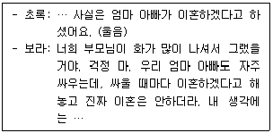
- 질문 공세
- 습관적 불평
- 일시적 구원
- 충고 일삼기
- 대화의 독점
(정답률: 60%)
43. 침묵하는 집단원에 대한 상담자의 반응으로 옳은 것을 모두 고른 것은?
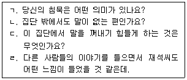
- ㄱ, ㄴ
- ㄱ, ㄹ
- ㄴ, ㄷ
- ㄱ, ㄷ, ㄹ
- ㄱ, ㄴ, ㄷ, ㄹ
(정답률: 알수없음)
44. 집단상담자가 집단상담 계획단계에서 취할 수 있는 조치로 옳지 않은 것은?
- 잠재된 위험을 예방하기 위해 집단원을 선별하는 과정을 거친다.
- 집단 운영에 윤리적ㆍ법적 쟁점이 없는지 검토한다.
- 객관적이고 실제적인 집단상담 평가 계획을 세운다.
- 집단의 암묵적 규범을 명확히 설정해 둔다.
- 집단의 시간, 횟수, 기간에 현실적인 제약이 있는지 고려한다.
(정답률: 알수없음)
45. 집단상담 평가방법으로 옳지 않은 것은?
- 집단 종결 2~3개월 후에 일부 집단원을 불러 모아 추후평가를 실시하였다.
- 집단 경험에 대한 집단원들의 느낌을 얼른 머리에 떠오르는 단어로 쓰도록 하였다.
- 매 회기가 끝날 무렵 집단원들에게 회기 경험을 기록하도록 하였다.
- 무기명으로 답할 수 있는 질문지나 평정척도를 사용하여 집단 경험을 평가하였다.
- 집단과정과 집단원에 대한 느낌이나 생각을 솔직히 털어놓고 의견을 교환하도록 하였다.
(정답률: 60%)
46. 집단상담에서 피드백 하기에 관한 설명으로 옳지 않은 것은?
- 사실을 서술하는 방식으로 제공한다.
- 변화 가능성을 염두에 두고 제공한다.
- 가치판단을 하거나 변화를 강요하지 않는다.
- 행동이 일어나기 직전에 주어야 한다.
- 한 사람이 하는 것보다 여러 사람이 하는 것이 효과적이다.
(정답률: 50%)
47. 학교 집단상담자의 바람직한 태도로 옳은 것을 모두 고른 것은?
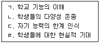
- ㄱ, ㄴ
- ㄱ, ㄹ
- ㄱ, ㄴ, ㄹ
- ㄴ, ㄷ, ㄹ
- ㄱ, ㄴ, ㄷ, ㄹ
(정답률: 알수없음)
48. 청소년 집단원의 권리 보호를 위한 집단상담자의 태도로 옳은 것을 모두 고른 것은?
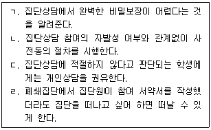
- ㄱ
- ㄱ, ㄴ
- ㄱ, ㄷ, ㄹ
- ㄴ, ㄷ, ㄹ
- ㄱ, ㄴ, ㄷ, ㄹ
(정답률: 알수없음)
49. 청소년 집단상담자가 취한 행동으로 옳지 않은 것은?
- 비밀보장 원칙의 예외상황을 설명해 주었다.
- 자신의 느낌을 솔직하게 표현하도록 도왔다.
- 원활한 집단 운영을 위해 집단규범을 제안하였다.
- 집단원이 표출하는 저항을 집단역동에 도움이 되도록 활용하였다.
- 집단상담 종결 후 집단원들의 연락처를 단체문자로 전송해 주었다.
(정답률: 73%)
50. 청소년 집단상담의 이점으로 옳은 것을 모두 고른 것은?
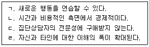
- ㄱ, ㄴ, ㄷ
- ㄱ, ㄴ, ㄹ
- ㄱ, ㄷ, ㄹ
- ㄴ, ㄷ, ㄹ
- ㄱ, ㄴ, ㄷ, ㄹ
(정답률: 70%)
3과목: 가족상담
51. 가족상담의 체계론적 사고에 관한 설명으로 옳지 않은 것은?
- 개인이 변화해도 가족체계를 변화시킬 수는 없다.
- 절대적으로 옳고 그른 상황이 있다고 보지 않는다.
- 모든 현상이 상호연관 되어있고 상호의존 하는 것으로 본다.
- 내담자를 능동적으로 선택할 수 있는 존재로 보고 존중한다.
- 가족구성원 모두를 고려할 뿐만 아니라 각자의 내적 경험도 고려한다.
(정답률: 알수없음)
52. 가족상담 개념에 관한 설명으로 옳은 것을 모두 고른 것은?
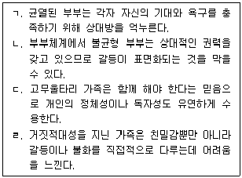
- ㄱ, ㄴ
- ㄷ, ㄹ
- ㄱ, ㄴ, ㄷ
- ㄱ, ㄴ, ㄹ
- ㄴ, ㄷ, ㄹ
(정답률: 20%)
53. 가족상담의 초기 단계에서 상담자의 역할에 관한 설명으로 옳은 것은?
- 상담자를 전문가로 인정할 수 있게 첫 회기에 가족 모두가 함께 오도록 권장한다.
- 자녀문제로 부모 중 한 사람이 먼저 상담에 오겠다고 하면 수락하고 동맹관계를 맺는다.
- 치료적 관계를 형성하여 전문가로서의 신뢰를 구축한다.
- 가족이 무엇을 문제로 보는지 물어보되 어린 자녀에게는 질문하지 않는다.
- 가족이 함께 모이기가 어려우므로 첫 회기에 바로 문제를 직면시킨다.
(정답률: 10%)
54. 다음 가족상담에서 상담자가 활용한 기법은?
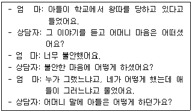
- 양육코칭
- 대처질문
- 관계실험
- 과정질문
- 빙산탐색
(정답률: 0%)
55. 다음 가계도 분석을 통한 가족역동에 관한 가설로 옳지 않은 것은?
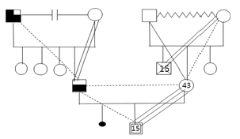
- IP 부는 부모의 정서적 단절로 모에 대한 충성심이 높았을 것이다.
- IP 친조부의 우울증이 IP 부에게 전수되었을 것이다.
- IP의 부계와 모계 모두 삼각관계에 맞물려 있을 것이다.
- IP 모는 오빠의 죽음으로 인한 불안을 아들에게 투사했을 것이다.
- IP 모는 여러 번의 상실로 아들과 정서적으로 더욱 융합했을 것이다.
(정답률: 0%)
56. 사티어(V. Satir)의 경험적 가족상담에 관한 설명으로 옳은 것을 모두 고른 것은?
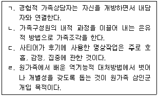
- ㄱ, ㄴ
- ㄱ, ㄹ
- ㄴ, ㄷ
- ㄱ, ㄷ, ㄹ
- ㄴ, ㄷ, ㄹ
(정답률: 알수없음)
57. 가족상담에서 경험적 접근에 관한 설명으로 옳지 않은 것은?
- 사티어(V. Satir)는 내담자 내면의 정서경험에 접촉하여 변화시킨다.
- 내면가족체계치료는 가족원 상호작용에 내재된 깊은 감정을 탐색한다.
- 경험적 가족상담에서는 가족을 하나의 체계로 보기보다는 개인들의 집합으로 본다.
- 지금-여기에서의 내담자 체험을 강조하고, 가족에 대한 개인의 관여를 통해 변화를 촉진시킨다.
- 휘태커(C. Whitaker)는 가족의 변화를 위해 적극적이면서도 강한 지시적인 방법을 사용하였다.
(정답률: 알수없음)
58. 다음 이야기치료의 스캐폴딩(scaffolding) 지도에서 각 번호에 대한 질문으로 옳지 않은 것은?
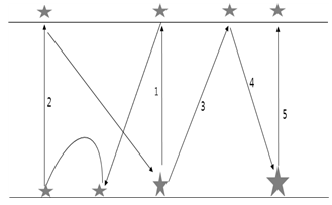
- 1: 당신은 무엇을 중요시했기에 그런 행동을 하게 되었나요?
- 2:약자를 도와야 한다는 생각으로 또 어떤 일을 했나요?
- 3: 만일 그렇게 한다면 당신은 어떤 모습의 사람일까요?
- 4: 그런 바람대로 한다면 무슨 일을 할 수 있을까요?
- 5: 당신 삶에서 무엇을 중요시한다고 할 수 있을까요?
(정답률: 알수없음)
59. 이야기치료에 관한 설명으로 옳지 않은 것은?
- 이야기치료자는 영향력 있는 위치를 고수해야 한다.
- 문제에 이름을 붙이고 문제이야기의 해체를 시작한다.
- 문제로 가득 찬 지배적 이야기와 상반되는 일화를 독특한 결과로 본다.
- 내담자가 자신이 선호하는 방향으로 자기 이야기를 써 나갈 수 있도록 한다.
- 호소 문제를 감소시킴으로서 단기적으로 자아정체감을 형성하도록 한다.
(정답률: 10%)
60. 가족생활주기에 관한 설명으로 옳지 않은 것은?
- 중년기에는 가족안정성을 유지하려고 역기능적 상호작용을 고수한다.
- 카터(B. Carter)와 맥골드릭(M. McGoldrick)의 가족생활주기는 결혼으로 시작된다.
- 난임 부부가 자녀를 출산한 후 자녀양육기로 들어가면서 양육스트레스를 경험한다.
- 자녀청소년기에는 부모자녀관계에서 가족체계의 경계가 유연하게 변화해야 한다.
- 듀발(E. Duvall)과 힐(R. Hill)은 가족생활주기를 8단계로 나누고 발달론적 관점을 가족에 적용하였다.
(정답률: 알수없음)
61. 최근 사회적 거리두기로 가족과 함께 있는 시간이 많아지면서 작은 아들 지훈(초4)이가 더욱 의기소침해지고 죽고 싶다는 이야기를 자주하는 문제로 가족이 상담을 받으러 왔다. 아빠는 지훈이와 사이가 좋으나 집에 없을 때가 많으며, 자녀에 대한 통제가 심한 엄마도 맞벌이로 바쁘고, 활달하고 고집이 센 형(고1)은 성적과 학습태도 문제로 엄마와 자주 싸운다. 이 사례에 대한 가족상담 개입으로 옳은 것을 모두 고른 것은?
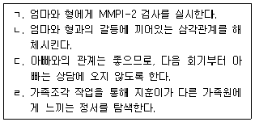
- ㄱ, ㄷ
- ㄴ, ㄹ
- ㄱ, ㄴ, ㄹ
- ㄴ, ㄷ, ㄹ
- ㄱ, ㄴ, ㄷ, ㄹ
(정답률: 알수없음)
62. 다음에서 상담자가 시도하고 있는 개입 기법은?
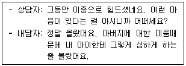
- 나-메시지
- 합리적 사고
- 교정적 정서경험
- 자신에게 초점두기
- 자기 뿌리내리기
(정답률: 알수없음)
63. 청소년기 자녀가 있는 가족에 대한 상담개입으로 옳은 것은?
- 자녀가 상담에 저항할 때, 부모와 연합하여 설득한다.
- 정체성의 유예시기이므로 부모가 자녀를 잘 통제하도록 한다.
- 부모역할은 자녀의 변화와 관계없이 일관성 있게 유지하도록 한다.
- 부모도 중년기의 위기를 맞이하는 시기이므로 부모의 문제를 우선적으로 다룬다.
- 자녀가 자유롭게 할 수 있는 것과 스스로 책임져야 하는 것을 구별할 수 있도록 한다.
(정답률: 19%)
64. 다음에 해당하는 가족상담 윤리원칙은?
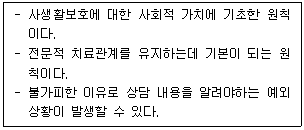
- 이중관계 금지
- 고지된 동의
- 비밀 보장
- 다양성 존중
- 자기결정권 존중
(정답률: 0%)
65. 가족상담 모델과 주요 기법의 연결로 옳은 것을 모두 고른 것은?
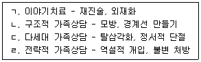
- ㄱ, ㄴ
- ㄷ, ㄹ
- ㄱ, ㄴ, ㄹ
- ㄴ, ㄷ, ㄹ
- ㄱ, ㄴ, ㄷ, ㄹ
(정답률: 알수없음)
66. 후기 가족상담의 이론적 기초에 관한 설명으로 옳지 않은 것은?
- 후기 구조주의는 사람들의 정체성에 대한 상세한 기술을 추구한다.
- 구성주의는 사람이나 현상에 관한 진실을 객관적으로 관찰할 수 없다고 주장한다.
- 2차 사이버네틱스에서 보는 체계는 자기준거성, 자율성, 부적 피드백 등의 속성을 갖는다.
- 포스트모더니즘은 인간이 각자의 인식행위를 통해 다르게 구성된 여러 우주에 살고 있다고 가정한다.
- 페미니즘은 '정치적인 것이 곧 개인적인 것이다'라는 신념으로 사회에서 발생하는 부당함의 개선을 주장한다.
(정답률: 알수없음)
67. 카터(B. Carter)와 맥골드릭(M. McGoldrick)이 제시한 재혼가족 생활주기 상의 발달과제를 순서대로 옳게 나열한 것은?
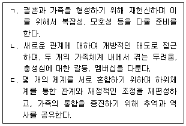
- ㄱ - ㄴ - ㄷ
- ㄱ - ㄷ - ㄴ
- ㄴ - ㄷ - ㄱ
- ㄷ - ㄱ - ㄴ
- ㄷ - ㄴ - ㄱ
(정답률: 알수없음)
68. 구조적 가족상담자가 관심을 두어야 하는 영역으로 옳은 것을 모두 고른 것은?
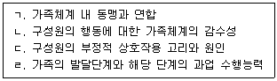
- ㄱ, ㄴ
- ㄷ, ㄹ
- ㄱ, ㄴ, ㄷ
- ㄱ, ㄴ, ㄹ
- ㄴ, ㄷ, ㄹ
(정답률: 10%)
69. 수정(여, 중3)은 온라인게임에 빠져 학교생활도 불성실하고 가족들과도 극심한 갈등상황에 처해있다는 이유로 상담을 받게 되었다. 수정과의 첫 회기에서 상담자가 가장 먼저 해야 할 일은?
- 게임에 관한 가족규칙을 탐색한다.
- 수정과 부모의 상호작용패턴을 탐색한다.
- 수정이 게임을 하게되는 상황을 파악한다.
- 게임이 학교생활에 미치는 영향력을 분석한다.
- 수정이 자발적으로 상담에 참여하게 되었는지를 파악한다.
(정답률: 알수없음)
70. 장기간 단기치료(long-term brief therapy)라 불리며, 2개의 남녀 혼성조 중 1조는 상담하고 2조는 관찰하는 방식으로 진행되는 모델에서 주로 활용하는 상담기법은?
- 균형 깨기
- 정의 예식
- 가족 게임
- 관계성 질문
- 긍정적 의미부여
(정답률: 10%)
71. 해결중심 단기상담의 발달과정에 관한 설명으로 옳은 것을 모두 고른 것은?
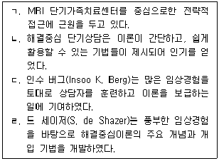
- ㄱ, ㄴ
- ㄷ, ㄹ
- ㄱ, ㄴ, ㄷ
- ㄴ, ㄷ, ㄹ
- ㄱ, ㄴ, ㄷ, ㄹ
(정답률: 알수없음)
72. 해결중심 단기상담의 치료 원리에 해당하지 않는 것은?
- 건강한 것에 초점을 둔다.
- 간단하고 단순한 방법을 일차적으로 사용한다.
- 이론적 틀에 맞추어 내담자를 진단하지 않는다.
- 변화는 삶의 일부이므로 그대로 받아들이도록 한다.
- 내담자의 강점과 자원은 물론 증상까지도 상담에 활용한다.
(정답률: 0%)
73. 다음 사례에서 적용할 수 있는 가족상담 모델과 개입방법의 연결로 옳지 않은 것은?
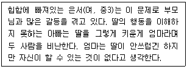
- 구조적 모델 - 힙합에 관한 순환질문
- 이야기치료 모델 - 가족 갈등의 외재화
- 경험적 모델 - 가족구성원의 의사소통 유형 분석
- 다세대 모델 - 부모와 자녀간 정서적 삼각관계 파악
- 해결중심 단기 모델 - 문제가 해결된 상황에 대한 기적질문
(정답률: 10%)
74. 다음 사례에 대한 가족상담 개입으로 옳지 않은 것은?
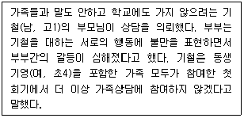
- 기철에게 개인 상담의 의사를 물어본다.
- 부모상담을 통하여 기철에 대한 대응 방안을 모색한다.
- 기영에게 오빠의 변화가 자신에게 미친 영향에 대해 질문한다.
- 기철의 학교에 연락하여 담임선생님께 기철의 학교폭력 여부를 확인한다.
- 부부상담을 통하여 미해결된 부부갈등과 그것이 자녀에 미친 영향 등을 파악한다.
(정답률: 알수없음)
75. 다음의 상담목표를 가진 모델에서 활용하는 주요 상담기법이 아닌 것은?
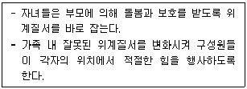
- 증상 처방
- 가장 기법
- 은유적 과제
- 지시적 방법
- 고된 체험 기법
(정답률: 알수없음)
4과목: 학업상담
76. 학습장애 학생들이 가지고 있는 특징과 그 대처방안으로 옳지 않은 것은?
- 과도한 불안으로 인해 과잉행동, 주의산만, 신경과민인 경우 혼자서 문제를 해결하도록 한다.
- 또래관계가 원만하지 못한 경우 잘못된 사회적 기술을 바로 잡아준다.
- 충동적으로 반응하여 오류가 많은 경우 과제물을 자세히 검토하여 학습속도를 조절하도록 한다.
- 자아개념이 부적절한 경우 이것을 학급규칙, 일상적인 학교생활 등에 반영하여 개별 지도해야 한다.
- 과제를 자주 실패하는 경우 형성평가와 체계적인 관찰을 통하여 성공경험을 할 수 있도록 한다.
(정답률: 28%)
77. DSM-5의 주의력결핍과잉행동장애(ADHD) 중에서 과잉충동행동 증상에 해당하는 것은?
- 종종 다른 사람의 이야기를 경청하지 않는다.
- 종종 지시에 따라서 행동하지 않거나 과제완성에 어려움을 겪는다.
- 종종 과제나 활동에 필요한 물건을 잃어버린다.
- 종종 과제와 활동을 체계화하는데 어려움이 있다.
- 종종 자신의 차례를 기다리지 못한다.
(정답률: 알수없음)
78. 학업상담에서 심리검사를 실시할 때 유의사항으로 옳은 것을 모두 고른 것은?
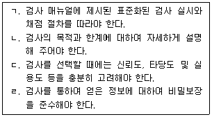
- ㄱ, ㄴ
- ㄱ, ㄷ
- ㄱ, ㄴ, ㄷ
- ㄴ, ㄷ, ㄹ
- ㄱ, ㄴ, ㄷ, ㄹ
(정답률: 20%)
79. 학습지진(slow learn)을 판단하는 기본 요소는?
- 학습동기
- 학습시간
- 공부기술
- 지적 능력
- 교사 기대
(정답률: 알수없음)
80. 학습과 관련된 호소문제와 그 내용에 관한 설명으로 옳지 않은 것은?
- 성적 하락문제로 심한 좌절감과 열등감을 갖게 된다.
- 시험불안문제로 지나치게 성적에 집착하고 하락을 두려워 한다.
- 학업능률의 저하문제로 학습동기가 매우 낮으며 적은 시간 투여로 성적이 오르지 않거나 부진하다.
- 학업에 대한 회의나 낮은 동기 문제로 다른 놀이에 많은 시간을 투여한다.
- 학업관련 파생문제로 성적이 부진한 학생에 대한 무시나 놀림 등이 나타날 수 있다.
(정답률: 알수없음)
81. 주의집중력이 부족한 내담자를 돕기 위한 상담으로 옳지 않은 것은?
- 내담자가 주의집중하는 데 방해가 되는 요소를 찾아서 제거하도록 한다.
- 내담자의 특성 중 주의집중하는 데 도움이 되는 강점을 찾아서 칭찬과 격려를 한다.
- 어려워하거나 흥미가 낮은 과목을 먼저 공부하는 학습계획을 세우도록 한다.
- 학습관련 상황에서 내담자가 자신의 행동을 관찰하거나 평가할 수 있도록 한다.
- 자기조절능력을 향상시키는 내적 언어를 개발하여 사용하도록 한다.
(정답률: 알수없음)
82. 자기교시훈련에 사용할 자기진술문(self-statement) 구성 요소가 옳게 나열된 것은?
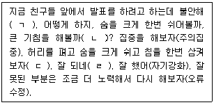
- ㄱ: 문제접근, ㄴ: 문제정의, ㄷ: 반응지도, ㄹ: 자기평가
- ㄱ: 문제접근, ㄴ: 문제정의, ㄷ: 자기평가, ㄹ: 반응지도
- ㄱ: 문제정의, ㄴ: 문제접근, ㄷ: 반응지도, ㄹ: 자기평가
- ㄱ: 문제정의, ㄴ: 반응지도, ㄷ: 문제접근, ㄹ: 자기평가
- ㄱ: 문제정의, ㄴ: 문제접근, ㄷ: 자기평가, ㄹ: 반응지도
(정답률: 알수없음)
83. 학습동기가 부족한 내담자 상담에 관한 설명으로 옳은 것을 모두 고른 것은?
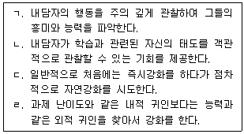
- ㄱ, ㄴ, ㄷ
- ㄱ, ㄴ, ㄹ
- ㄱ, ㄷ, ㄹ
- ㄴ, ㄷ, ㄹ
- ㄱ, ㄴ, ㄷ, ㄹ
(정답률: 알수없음)
84. 학습부진 영재아 상담에 관한 설명으로 옳지 않은 것은?
- 학교에서 영재아동에게 맞는 교육기회가 부적절하게 주어져서 나타날 수 있다.
- 완벽주의 성향으로 성공가능성이 낮은 목표를 설정하는 경향이 있기 때문에 능력보다 낮은 목표를 설정하도록 한다.
- 객관적인 진단과 평가에 기초하여 체계적으로 접근을 해야 한다.
- 실패는 높게 지각하고 성공은 낮게 지각하는 경향이 있기 때문에 이것을 객관적으로 지각하는 상담을 해야 한다.
- 영재성으로 인하여 부적절한 친구관계를 가질 수 있기 때문에 이에 대한 상담을 해야 한다.
(정답률: 알수없음)
85. 다음의 내담자를 상담할 때 사용한 행동수정기법은?
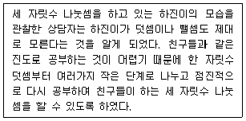
- 행동형성법
- 토큰강화
- 전환강화
- 프리맥의 원리
- 간헐강화
(정답률: 알수없음)
86. 학업상담에 관한 설명으로 옳은 것을 모두 고른 것은?
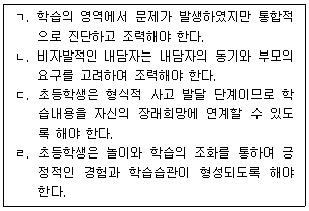
- ㄱ, ㄴ, ㄷ
- ㄱ, ㄴ, ㄹ
- ㄱ, ㄷ, ㄹ
- ㄴ, ㄷ, ㄹ
- ㄱ, ㄴ, ㄷ, ㄹ
(정답률: 알수없음)
87. 학습상담과 관련된 심리검사의 구성에 관한 설명으로 옳은 것은?
- 청소년 학습전략검사(ALSA)는 학습동기, 자아효능감, 인지ㆍ초인지 전략, 자원관리전략으로 구성되어 있다.
- 학습전략검사(MLST-Ⅱ)는 인지적 차원, 정서적 차원, 행동적 차원으로 구성되어 있다.
- KISE기초학력검사(KISE-BAAT)는 읽기, 수학, 쓰기, 말하기로 구성되어 있다.
- K-ABC검사는 순차처리속도, 동시처리속도, 정보처리속도, 습득도로 구성되어 있다.
- 기초학습기능검사(KEDI-IBLST)는 셈하기, 읽기Ⅰ, 읽기Ⅱ, 쓰기, 듣기로 구성되어 있다.
(정답률: 알수없음)
88. 시험불안에 대한 개입방법으로 옳은 것을 모두 고른 것은?
- ㄱ, ㄴ, ㄷ
- ㄱ, ㄷ, ㄹ
- ㄱ, ㄹ, ㅁ
- ㄴ, ㄷ, ㅁ
- ㄴ, ㄹ, ㅁ
(정답률: 0%)
89. 정보처리의 자동화(automaticity)에 관한 설명으로 옳은 것은?
- 의식적 통제를 필요로 한다.
- 시연이 적을수록 빠르게 형성된다.
- 실행 시 자동화 이전보다 더 많은 주의를 필요로 한다.
- 제한된 용량을 갖는 작업 기억에 많은 부하를 줄 수 있다.
- 큰 노력 없이도 더 빠르게 필요한 지식을 인출할 수 있다.
(정답률: 알수없음)
90. 학습을 위한 생활관리 차원에서 권장되는 음식에 관한 설명으로 옳지 않은 것은?
- 등푸른 생선은 뇌신경계의 반응 속도를 높이는 대표적인 음식이다.
- 레몬에 다량 함유된 요오드는 뇌신경세포 수의 증식을 촉진한다.
- 미역 등에 들어있는 칼륨은 머리를 맑게 한다.
- 볶은 검은콩은 씹으면 뇌를 자극해 두뇌발달에 도움을 주기도 한다.
- 옥수수 눈에 들어있는 레시틴 성분은 두뇌발달에 좋은 영향을 미친다.
(정답률: 25%)
91. 가드너(H. Gardner)의 다중지능 설정 준거에 해당하지 않는 것은?
- 두뇌의 고유영역
- 독자적 발달 경로
- 특출한 인물
- 심리측정학적 증거
- 고유한 정서
(정답률: 0%)
92. 짐머만(B. Zimmerman)이 제시한 자기조절학습전략 범주 중 조직과 변형(organizing and transforming)에 해당하는 것은?
- 사태 혹은 결과를 기록한다.
- 시연에 의해 자료를 기억한다.
- 학습의 질 혹은 학습 진전을 평가한다.
- 수업자료를 내현적, 외현적으로 재배열한다.
- 숙제를 할 때 앞으로의 과제 정보를 확보한다.
(정답률: 10%)
93. 라이언과 데시(Ryan & Deci)가 제안한 자기결정성이론에서 가정하는 세 가지 기본심리욕구에 해당하는 것을 모두 고른 것은?
- ㄱ, ㄴ, ㄹ
- ㄱ, ㄷ, ㅁ
- ㄴ, ㄷ, ㄹ
- ㄴ, ㄷ, ㅁ
- ㄷ, ㄹ, ㅁ
(정답률: 알수없음)
94. 반두라(A. Bandura)가 제시한 자기효능감에 관한 설명으로 옳은 것을 모두 고른 것은?
- ㄱ, ㄴ
- ㄷ, ㄹ
- ㄱ, ㄴ, ㄷ
- ㄴ, ㄷ, ㄹ
- ㄱ, ㄴ, ㄷ, ㄹ
(정답률: 알수없음)
95. 주의집중전략에서 주의력과 집중력을 구분할 경우 집중력에 관한 설명은?
- 주어진 시간 내에 과제를 완성하기 위해 의식을 모으는 능력이다.
- 선택적 반응능력 등과 유사한 개념이다.
- 생물학적 반응 경향성으로 인해 정보가 강하거나 새로운 경우 쉽게 발휘된다.
- 감각등록기와 단기기억 사이에서 가장 크게 요구된다.
- 주로 정보처리의 초반 단계에서 요구되는 능력이다.
(정답률: 10%)
96. 맥키치(W. McKeachie) 등에 의해 제안된 학습전략과 그 사례가 바르게 짝지어진 것은?
- ㄱ: c, d, e
- ㄱ: f, g, h
- ㄴ: b, g, h
- ㄴ: d, e, f
- ㄷ: a, b, c
(정답률: 0%)
97. 학업 호소 문제와 학습부진의 원인을 통합한 황매향의 분류모형에서 A에 해당하지 않는 것은?
- 또래관계
- 교사와의 관계
- 부모에 대한 지각
- 형제와의 경쟁
- 성취압력
(정답률: 17%)
98. 과제를 수행하는 동안 자신의 주의집중과 이해 정도를 지속적으로 확인하는 과정은?
- 정교화
- 조직화
- 점검
- 시연
- 노력관리
(정답률: 알수없음)
99. 학습전략에 관한 설명으로 옳은 것을 모두 고른 것은?
- ㄱ, ㄷ
- ㄱ, ㅁ
- ㄴ, ㄹ, ㅁ
- ㄷ, ㄹ, ㅁ
- ㄱ, ㄴ, ㄷ, ㄹ, ㅁ
(정답률: 알수없음)
100. 에프클라이즈(A. Efklides)의 정의에 기반하여 메타인지를 '모니터링'과 '통제'로 구분할 때 모니터링에 해당하는 것은?
- 의식적이고 계획적인 활동 및 전략 사용
- 인지기능에 대한 생각
- 인지과정에 대한 조절
- 노력의 분배
- 시간의 분배
(정답률: 알수없음)